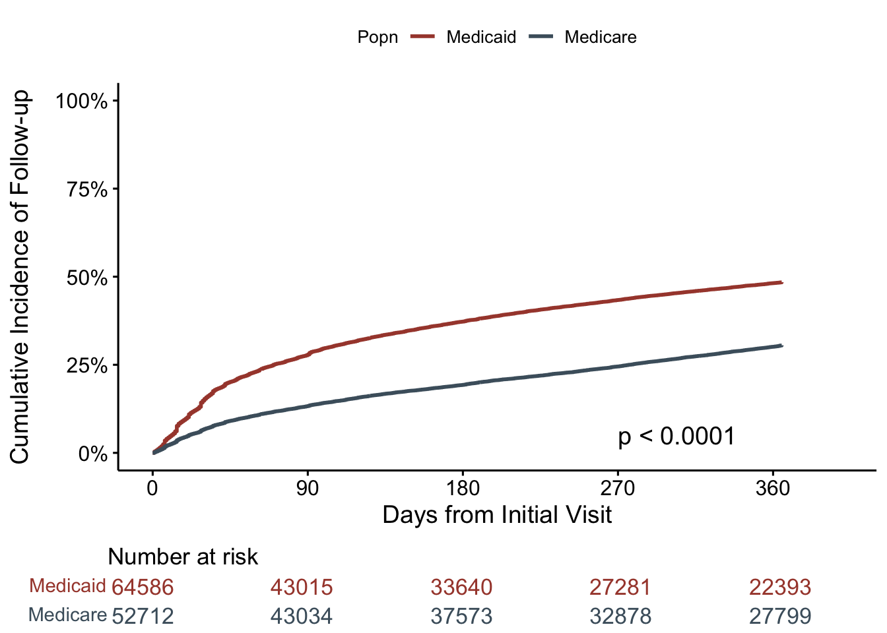
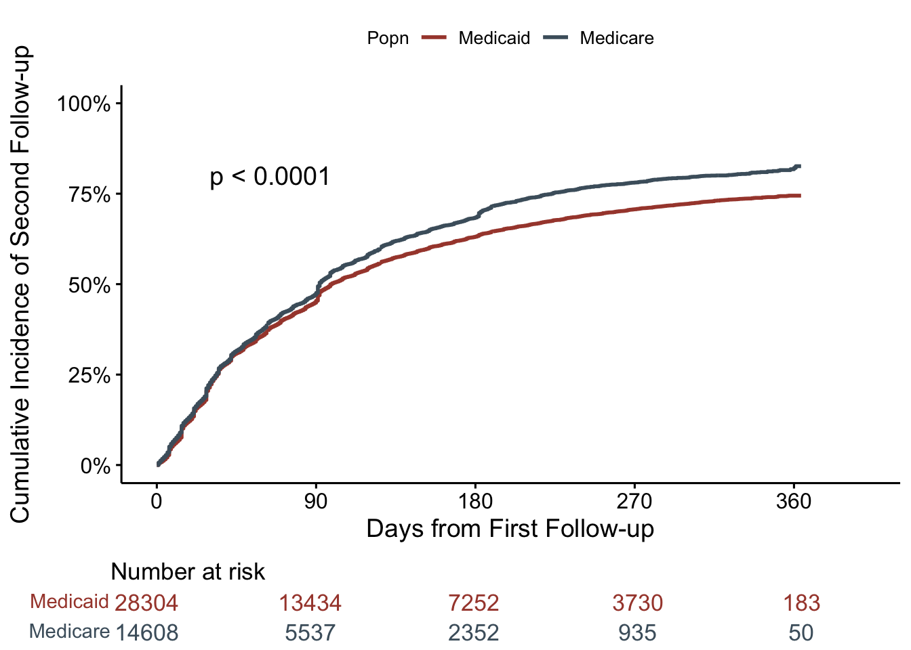

# packages
library(tidyverse)
library(survival)
library(survminer)
# data + a bit of cleaning/wrangling
fu <- read_csv("/Users/stevensmith/Dropbox (UFL)/Manuscripts/K01/Early Patterns of Care/data/tfu_visualization.csv",
show_col_types = FALSE) |>
rename_with(tolower) #|>
# replace_na(list(time_to_actual_sfu = 0))
# recalculate time variable for patients w/o a second follow-up
# fu <- fu |>
# mutate(t2fu = case_when(time_to_actual_ffu == 1 &
# time_to_actual_sfu == 0 ~ 365 - t1fu,
# TRUE ~ t2fu))
# create a subset of patients with a first follow-up (for time-to-second
# follow-up visit plot)
fu2 <- fu |> filter(time_to_actual_ffu == 1)
# create survival objects
fut1 <- survfit(Surv(t1fu, time_to_actual_ffu) ~ source, data = fu)
fut2 <- survfit(Surv(t2fu, time_to_actual_sfu) ~ source, data = fu2)
# function for readibility
comma <- function(x) format(x, digits = 2, big.mark = ",")Time-to-follow-up Visualizations
This is an example of creating cumulative incidence curves for a time-to-event outcome. Here, we’re using our Personal Hypertension Care project data from the OneFlorida research consortium.
We’re using three packages: tidyverse, survival, and survminer.
Data Prep
Data
We have 64,586 Medicaid patients, and 52,712 Medicare patients. We intend to compare cumulative incidence of time-to-first follow-up (first hypertension-related visit) after starting hypertension therapy. Time 0 is date that they started antihypertensive treatment.
Plotting time-to-first follow-up
First, we create a cumulative incidence curve for time-to-first follow-up. The y-axis represents the cumulative proportion that had a first follow-up visit over time (x-axis). We’re going to include Medicaid and Medicare on the same plot, as well as a formal comparison (w/ p-value), but if we don’t want to directly compare the two, we could remove the p-value, or even split these up onto 2 figures. We’re using the ggsurvplot() function from the survminer package.
ggsurvplot(fut1,
data = fu,
fun = "event",
censor = FALSE,
pval = TRUE, # set to FALSE if don't want p-value
pval.coord = c(270, 0.05), # can delete this line if don't want p-value
risk.table = TRUE,
legend.title = "Popn",
legend.labs = c("Medicaid", "Medicare"),
palette = c("#A7473A", "#4B5F6C"),
break.time.by = 90,
xlab = "Days from Initial Visit",
ylab = "Cumulative Incidence of Follow-up",
axes.offset = TRUE,
ylim = c(0, 1),
tables.theme = theme_void(),
tables.height = 0.15,
tables.col = "strata",
surv.scale = "percent")
Time-to-second follow-up
Same thing here, but now we are restricting this plot to the 28,304 Medicaid patients, and 14,608 Medicare patients that had a first-follow-up visit. And, time 0 on x-axis represents the time of their first follow-up visit, with the outcome being second follow-up visit.
ggsurvplot(fut2,
data = fu2,
fun = "event",
censor = FALSE,
pval = TRUE,
pval.coord = c(30, 0.8),
risk.table = TRUE,
legend.title = "Popn",
legend.labs = c("Medicaid", "Medicare"),
palette = c("#A7473A", "#4B5F6C"),
break.time.by = 90,
xlab = "Days from First Follow-up",
ylab = "Cumulative Incidence of Second Follow-up",
axes.offset = TRUE,
ylim = c(0, 1),
tables.theme = theme_void(),
tables.height = 0.15,
tables.col = "strata",
surv.scale = "percent")
These curves look surprisingly similar! Particularly since there was a fairly stark difference in time-to-first follow-up. What to make of this?